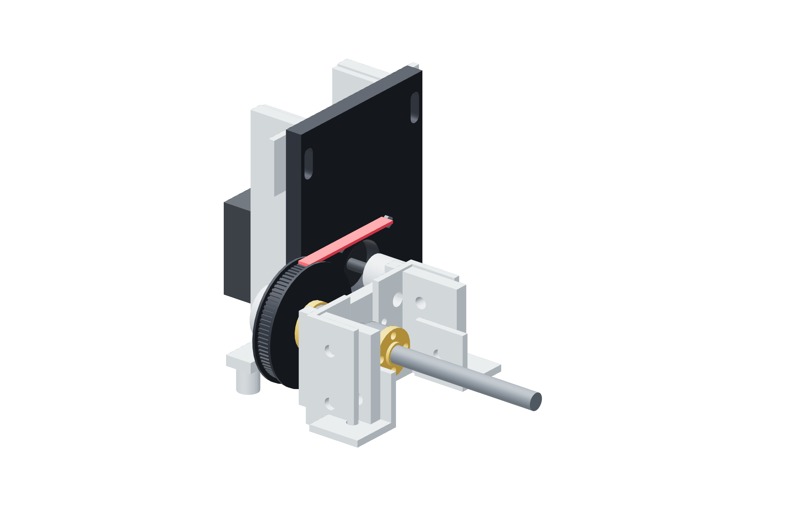

Screw drives / six copies51 / 179
Seat and tension the belt
The belt supplies the 4:1 reduction. Tension must keep the teeth seated without bending the screw, motor plate or bearing supports.
AddPer drive: 1 closed GT2 / 6 mm belt
Tools / setupHand rotation · motor-slot hex key

- Loop the belt over the 20T and 80T pulleys while the motor is inboard.
- Slide the motor outward until slack is removed and the belt teeth stay seated.
- Hold the plate square while seating both M5 slot fasteners.
- Rotate the 80T pulley slowly through two turns in each direction; watch both belt edges.
Ready when
The belt stays centered and the screw turns without a periodic catch in both directions. A migrating belt or repeated catch requires alignment/profile correction. Release tension and fix that cause before fitting the guard.